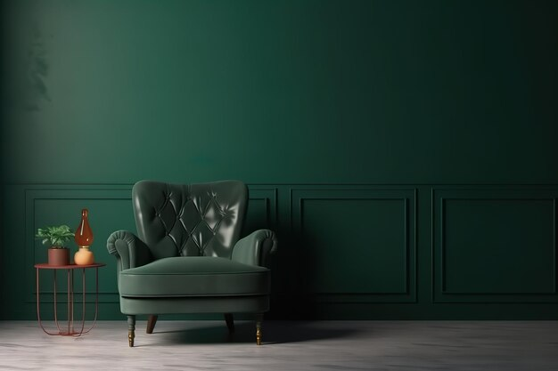

Publicado em:
Como escolher a melhor tinta para ambientes internos e externos

Pintar um ambiente parece simples, mas a escolha da tinta certa é o que define se o resultado será duradouro e bonito ou se em pouco tempo a parede apresentará manchas, descascados e um aspecto desagradável. A tinta não serve apenas para dar cor: ela também protege contra umidade, mofo, calor e até ajuda a refletir ou absorver luz.
O problema é que existem dezenas de opções nas lojas, com nomes técnicos e diferentes funções. Neste artigo, você vai entender os principais tipos de tinta, aprender onde cada uma deve ser usada, como calcular a quantidade certa, além de dicas extras para economizar sem perder qualidade. No final, você terá confiança para comprar a tinta ideal para o seu projeto.
Tipos de tinta mais usados
No mercado, os tipos mais comuns são:
- Uso: indicada para ambientes internos secos, como quartos, salas e escritórios.
- Características: solúvel em água, fácil de aplicar, seca rápido e quase não tem cheiro.
- Acabamento: fosco, ideal para esconder pequenas imperfeições.
- Vantagens: baixo custo, fácil retoque e limpeza simples.
- Desvantagens: não resiste à umidade.
- Uso: pode ser aplicada tanto em ambientes internos quanto externos.
- Características: mais resistente que a PVA, com aditivos contra sol, chuva e mofo.
- Acabamentos:
- Fosco: disfarça imperfeições.
- Acetinado: equilíbrio entre fosco e brilho, fácil de limpar.
- Semibrilho: mais resistente e lavável, mas evidencia falhas.
- Vantagens: durável, fácil manutenção, resistente à umidade.
- Desvantagens: custo mais elevado.
- Uso: ideal para madeira e metal.
- Características: forma película resistente contra ferrugem e desgaste.
- Acabamento: fosco, acetinado ou brilhante.
- Vantagens: ótimo para portas, grades e móveis.
- Desvantagens: cheiro forte, exige solvente, secagem lenta.
- Uso: excelente para pisos, cozinhas, banheiros e garagens.
- Características: extremamente resistente, lavável e impermeável.
- Acabamento: geralmente brilhante, mas também pode ser fosco.
- Vantagens: alta resistência e fácil limpeza.
- Desvantagens: preço elevado e aplicação complexa.
- Tinta à base de cal: tradicional, respirável, ideal para áreas externas simples.
- Tinta lavável: versão de PVA ou acrílica com aditivos, ótima para casas com crianças.
- Tinta antimofo: ideal para ambientes úmidos.
- Tinta térmica/reflexiva: usada em telhados e fachadas para reduzir calor.
- Fosco: esconde imperfeições, dá aspecto elegante e uniforme, mas é mais difícil de limpar. Bom para salas e quartos.
- Semibrilho: reflete mais luz, é mais lavável e indicado para cozinhas e corredores.
- Acetinado: intermediário entre fosco e brilhante, oferece equilíbrio entre beleza e facilidade de limpeza.
- Brilhante: muito resistente e lavável, mas realça imperfeições. Indicado para áreas menores, portas e detalhes.
- Quartos e salas: tinta PVA fosca é suficiente. Para quem gosta de ambientes iluminados, o acabamento acetinado também é boa opção.
- Cozinhas e banheiros: use acrílica semibrilho, pois resiste melhor à umidade e pode ser limpa com pano úmido.
- Ambientes infantis: dê preferência a tintas laváveis, que permitem limpar riscos de lápis e sujeiras sem danificar a pintura.
- Acrílica Premium: oferece proteção contra umidade, mofo e raios UV, com durabilidade de até 5 a 10 anos.
- Textura Acrílica: ótima para fachadas, pois esconde imperfeições e dá aspecto decorativo. Também resiste às intempéries.
- Cores claras: refletem melhor o calor e evitam que a fachada esquente. Cores escuras absorvem calor e desbotam mais rápido.
- Compre embalagens maiores: o custo por litro é sempre menor.
- Prepare a parede: aplicar selador ou fundo preparador aumenta a durabilidade e evita que a parede absorva tinta demais.
- Use bons acessórios: rolos de lã para paredes lisas e rolos de espuma para detalhes melhoram o rendimento.
- Prefira marcas confiáveis: tintas muito baratas podem exigir até 3x mais demãos.
- Pinte em dias secos e ventilados: isso acelera a secagem e evita manchas.
- Não calcular a quantidade de tinta corretamente.
- Pintar sem lixar e preparar a parede, o que causa descascamento.
- Usar tinta PVA em áreas úmidas, levando a bolhas e manchas.
- Economizar no número de demãos (pelo menos 2 são obrigatórias para acabamento uniforme).
- Ignorar a cor da tinta de fundo (cores escuras sobre parede clara exigem mais demãos e vice-versa).
- Tons neutros: cinza, bege e branco nunca saem de moda.
- Tons terrosos: trazem sensação de aconchego e são tendência em ambientes internos.
- Cores vibrantes: usadas em apenas uma parede criam pontos de destaque.
- Azul e verde: associados à tranquilidade, ótimos para quartos.
Tinta Látex (ou PVA)
Tinta Acrílica
Esmalte Sintético
Tinta Epóxi
Outras tintas especiais
Acabamentos disponíveis
Além do tipo, cada tinta pode ter acabamentos diferentes, que influenciam na estética e na manutenção:
Qual tinta usar em ambientes internos?
Em ambientes internos, a prioridade deve ser o conforto e a facilidade de manutenção:
Qual tinta usar em ambientes externos?
As áreas externas exigem mais cuidado, pois ficam expostas ao sol, chuva e poluição:
Dicas extras para economizar
Veja aqui 👉: Quanto de tinta ou piso usar por metros quadrado.
👉 Use nossa calculadora de pintura.
Erros comuns ao pintar
Tendências de cores e estilos
Além da funcionalidade, as cores também têm papel importante na decoração:
Conclusão
Escolher a tinta correta é o segredo para um resultado bonito e duradouro. Para ambientes internos secos, a PVA é econômica; para áreas úmidas, prefira acrílica. Para metais e madeiras, use esmalte sintético, e para pisos ou azulejos, a epóxi é a mais indicada. Em fachadas e muros, aposte na acrílica premium ou em textura acrílica.
Calcule bem a quantidade, prepare as superfícies e use acessórios de qualidade. Assim, você economiza, evita retrabalho e garante uma pintura impecável por anos.